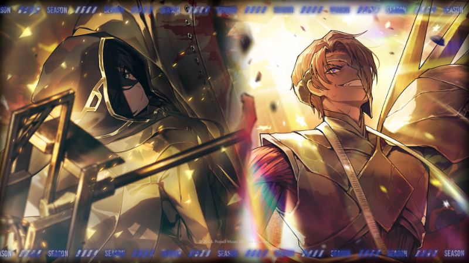
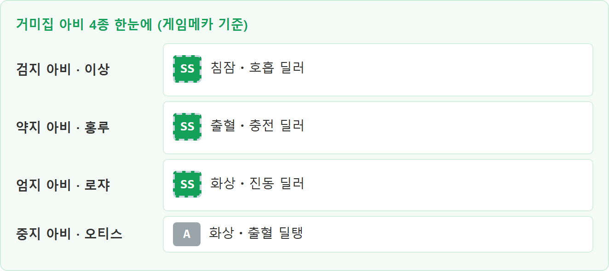
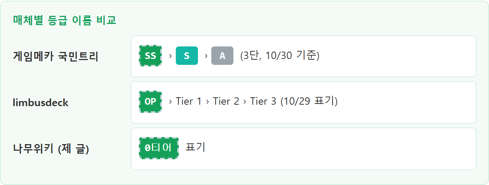

림버스 컴퍼니 티어표 SS 인격 8종, 게임메카 기준으로 보는 고르는 법
림버스 컴퍼니 티어표를 열면 인격이 57종이나 줄줄이 깔려 있어서, 어느 줄부터 읽어야 할지 막막하실 텐데요. 이 글은 게임메카 국민트리 티어표(최종 업데이트 26/10/30 기준)에서 맨 위 칸인 SS 8종만 뽑아, 인격을 고를 때 무엇을 보면 되는지 정리한 글이에요. 게임메카 한 곳의 평가이고 게임메카 페이지에서는 평가 기준을 찾지 못했어요. 그래서 'SS니까 무조건'보다는 내 인격ㆍ수감자 조합에 맞춰 고르는 쪽으로 읽어 주세요.

스팀 신규 인격 공지 배너
공식 이미지(Project Moon) · 출처: 림버스 컴퍼니 Steam 공지
이 배너는 10월 29일 스팀 신규 인격 공지에 올라온 그림이에요. 인격 이름은 그림에 없고, 아래 표는 10월 30일 게임메카 기준입니다.
1. 게임메카 10월 30일 기준, SS 8종 한눈에
게임메카 국민트리 10월 30일자 티어표에서 SS는 8종인데요, 전체 57종이 SS 8종ㆍS 14종ㆍA 35종으로 나뉘어 있어요. 아래 표가 그중 SS 8종이에요.
| 인격 | 수감자 | 딜 유형 |
|---|---|---|
| 오트쿠튀르::르루주 바느질의 왕 | 히스클리프 | 출혈ㆍ충전 딜러, 체력이 깎일수록 세지고 싱클레어를 돕는 구조 |
| 거미집 검지 아비 | 이상 | 침잠ㆍ호흡 딜러, 스택을 모아 강화 3스킬로 터뜨리는 타입 |
| 흑수 - 묘 필두 | 파우스트 | 파열 딜탱, 파열을 이어 가면서 아군까지 지키는 쪽 |
| 거미집의 검 | 료슈 | 화상ㆍ출혈ㆍ호흡 참격 딜러, 같은 소속이 쓰러질수록 강해짐 |
| 동부 엄지 카포 IIII | 뫼르소 | 화상ㆍ진동 딜탱, 특수 탄환을 쓴 양에 따라 부가 효과가 붙음 |
| 홍원 군주 | 홍루 | 파열ㆍ호흡 딜포터, 다른 흑수 인격과 맞물려 돌아감 |
| 거미집 약지 아비 | 홍루 | 출혈ㆍ충전 딜러, 예열이 끝나면 광역 화력이 나옴 |
| 거미집 엄지 아비 | 로쟈 | 화상ㆍ진동 딜러, 강화 3스킬로 막타를 노리는 킬 캐치형 |
거미집 엄지 아비 로쟈의 자세한 운영법은 제 블로그의 「림버스 컴퍼니 신규 인격 거미집 엄지 아비 로쟈 스킬 운영법」 글에 적어 뒀어요. 이 글은 어느 인격이 어떻게 강한지가 아니라 여럿 중에 어떤 기준으로 고르는지에 집중할게요.
2. 티어표 읽는 법, SS는 범용ㆍ대체 불가
게임메카는 SS를 범용성이 뛰어나서 대신할 인격이 없는 자리, S를 조건을 채워야 빛나는 자리, A를 특정 시너지나 제한된 환경에서 좋은 자리로 정의해요.
| 등급 | 인원 | 게임메카 정의 |
|---|---|---|
| SS | 8종 | 여러 상황에서 두루 쓰기 좋고 대체할 인격이 없음 |
| S | 14종 | 조건을 맞췄을 때 성능이 확 올라감 |
| A | 35종 | 특정 시너지 조합이나 한정된 환경에서 좋음 |
등급 이름은 매체마다 달라요. 제 엄지 아비 로쟈 글에서는 나무위키를 인용해 '0티어'라고 적었는데요, 같은 인격이 게임메카에서는 SS예요. 척도 이름이 다르니 숫자나 알파벳만 보고 단순 비교하지 마세요.
3. 딜 유형으로 고르기, 딜러 5ㆍ딜탱 2ㆍ딜포터 1
SS 8종을 게임메카 코멘트에 적힌 역할로 나누면 딜러 5종, 딜탱 2종, 딜포터 1종이에요.
- 딜러 5종: 바느질의 왕(히스클리프), 거미집 검지 아비(이상), 거미집의 검(료슈), 거미집 약지 아비(홍루), 거미집 엄지 아비(로쟈)
- 딜탱 2종: 흑수 - 묘 필두(파우스트), 동부 엄지 카포 IIII(뫼르소)
- 딜포터 1종: 홍원 군주(홍루)
키워드가 겹치는 인격도 있어요. 화상ㆍ진동은 카포 IIII와 엄지 아비, 출혈ㆍ충전은 바느질의 왕과 약지 아비, 호흡은 검지 아비ㆍ거미집의 검ㆍ홍원 군주가 한 묶음이더라고요. 지금 키우는 덱의 키워드와 겹치는 쪽부터 후보로 올리는 게 편하겠네요. 딜탱ㆍ딜포터의 정확한 뜻은 게임메카에 따로 설명이 없어서, 역할 정의는 인게임에서 직접 확인해 보세요.
4. 조건이 붙는 SS 체크리스트
SS 8종 중 코멘트에 편성 조건이 드러난 건 5종이에요. 검지 아비와 엄지 아비 2종은 강화 3스킬 얘기만 있고 편성 조건은 따로 적혀 있지 않아요.
| 인격 | 뽑기 전에 같이 볼 것 |
|---|---|
| 바느질의 왕 | 싱클레어를 키우고 있는지, 체력을 낮출 수단이 있는지 |
| 거미집의 검 | 같은 소속 인격을 함께 편성할 수 있는지 |
| 동부 엄지 카포 IIII | 특수 탄환을 소모하는 흐름에 익숙한지 |
| 홍원 군주 | 다른 흑수 인격을 갖고 있는지 |
| 거미집 약지 아비 | 예열 구간을 버틸 편성이 나오는지 |
표의 8종 중 내가 가진 인격이 몇 개인지부터 세어 보세요.
나머지 1종인 묘 필두는 파열을 유지하는 게 핵심이라 파열 덱 여부가 기준이에요. SS 정의는 범용성인데 코멘트엔 조건이 섞여 있어서, 저는 코멘트 쪽을 체크리스트로 쓰자는 입장이에요. 상황별로 갈라 보면 이래요.
- 싱클레어를 굴리고 있다면 바느질의 왕부터: 코멘트가 싱클레어 보조를 직접 말하고 있어서
- 화상ㆍ진동 덱이라면 카포 IIII나 엄지 아비: 두 인격 모두 같은 키워드로 묶여서
- 흑수 인격이 여럿이라면 홍원 군주: 코멘트가 다른 흑수 인격과의 상호작용을 직접 말하고 있어서
- 편성 조건이 단순한 쪽이 좋다면 검지 아비나 엄지 아비: 코멘트에 편성 조건이 따로 없어서
5. 아비 4종 구분과 SS 없는 수감자 5명
거미집 아비 중 검지(이상)ㆍ약지(홍루)ㆍ엄지(로쟈)는 SS이고, 중지(오티스)만 A예요. 게임메카 기준이고, 오티스 쪽은 제 블로그의 「림버스 컴퍼니 신규 인격 거미집 중지 아비 오티스(오티아스) …」 글에서 따로 다뤘어요.

손가락 이름만으로는 헷갈리니 꼭 수감자와 같이 부르세요. 아비라고 다 SS는 아니라는 게 포인트예요. 수감자로 나눠 보면 SS가 있는 쪽은 히스클리프ㆍ이상ㆍ파우스트ㆍ료슈ㆍ뫼르소ㆍ홍루ㆍ로쟈 7명이에요. 홍루만 SS가 2종이고요.
반대로 SS가 없는 수감자는 돈키호테ㆍ싱클레어ㆍ이스마엘ㆍ오티스ㆍ그레고르 5명이에요. 이 중 돈키호테ㆍ싱클레어ㆍ이스마엘ㆍ그레고르는 S가 있고, 오티스는 S도 SS도 없고 A만 2종이에요. 주인장이라면 SS 유무보다 내가 아끼는 수감자의 S를 같이 볼 것 같아요ㅋㅋ.
6. 매체 비교와 자주 묻는 질문
limbusdeck의 OP 9종과 게임메카 SS 8종은 4종만 겹쳐요.
limbusdeck 한글판은 OP와 Tier 1~3 체계라 SS 자체가 없고, 여러 지표와 주관을 섞은 재미용 참고라고 밝혀 둔 곳이에요. 겹치는 4종은 거미집 검지 아비 이상ㆍ거미집의 검 료슈ㆍ흑수 - 묘 필두 파우스트ㆍ홍원 군주 홍루예요. 두 매체 평가가 갈리는 인격도 있는데요, 동부 엄지 카포 IIII 뫼르소는 게임메카 SS인데 limbusdeck에서는 Tier 2이고, 거미집 중지 아비 오티스는 게임메카 A인데 limbusdeck에서는 Tier 1이에요.

Q. SS 인격은 지금 뽑을 수 있나요?
획득 방법과 현재 추출 가능 여부는 확인하지 못했어요. 인게임 추출 탭에서 직접 확인해 보세요.
Q. 티어표는 얼마나 자주 바뀌나요?
게임메카는 신규 인격이 추가되면 갱신하겠다고 적어 두었어요. 이후 업데이트로 배치가 달라질 수 있으니 글을 볼 때 최종 업데이트 날짜부터 확인하세요.
참고한 곳
· 게임메카 국민트리 림버스 컴퍼니 티어표 (최종 업데이트 26/10/30 기준)
· limbusdeck 티어 리스트 (10/29 표기)
· 림버스 컴퍼니 Steam 신규 인격 공지
▶ 같이 보면 좋은 글
· 림버스컴퍼니 거울던전 시즌8 5층 등반 가호, 고난 선택 공략
· 림버스 컴퍼니 오트쿠튀르 수선실 로쟈(수료쟈, 수선쟈, 가위쟈) 운영 공략
· 림버스컴퍼니 신발슈, 르누슈, 오트쿠튀르 르누아르 신발관 료슈 운영법 공략